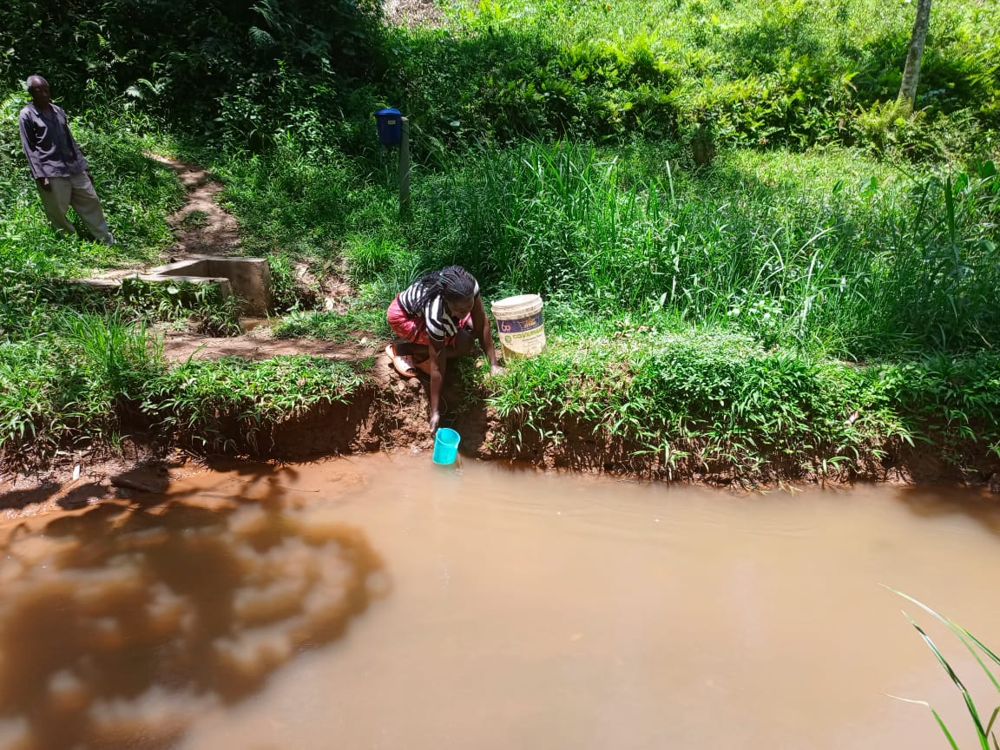
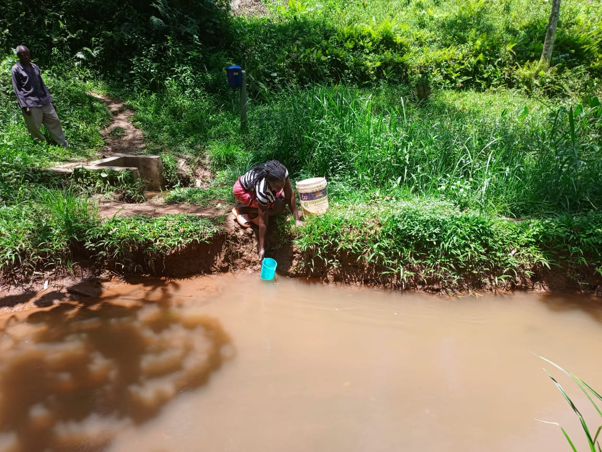

Cholera
Cholera is an acute diarrheal illness caused by ingesting contaminated water or food. It can be fatal within hours if untreated.
Access to safe and clean water is essential for health, dignity, and sustainable development. Unsafe water contributes to the spread of preventable diseases and affects millions of people worldwide, especially children.
Cholera is an acute diarrheal illness caused by ingesting contaminated water or food. It can be fatal within hours if untreated.
Typhoid is caused by Salmonella bacteria and spreads through unsafe water and poor sanitation.
Dysentery leads to severe diarrhea with blood and mucus, commonly caused by contaminated water.

Frequent diarrhea leads to dehydration and malnutrition, especially dangerous for young children.
Waterborne diseases can cause severe diarrhea, rapidly leading to dehydration and malnutrition. Young children are especially at risk. Seek immediate medical attention to prevent serious complications.
Good sanitation and hygiene are just as important as clean water. Proper waste disposal and handwashing significantly reduce the spread of disease.
Communities play a vital role in maintaining water safety through education, infrastructure, and cooperation.
Clear water is not always safe. Always treat or test water before drinking.
Rainwater can be safe if collected and stored properly, but it should still be treated.